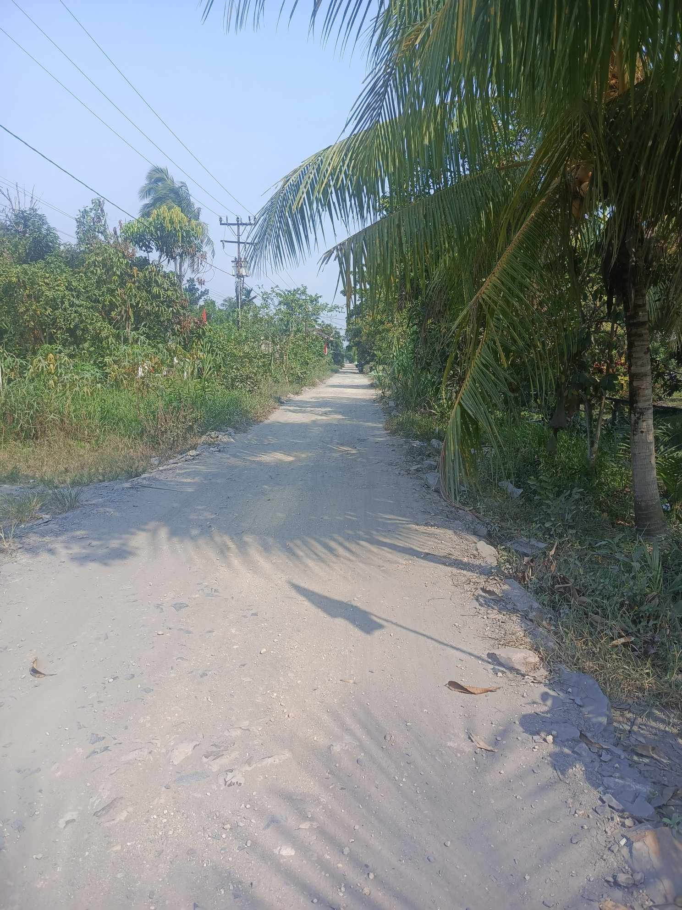

Selamat Datang di Desa Sepadu
Desa Sepadu adalah desa yang indah dan asri, terletak di Kecamatan Semparuk, Kabupaten Sambas. Dikelilingi oleh hamparan sawah yang luas dan pepohonan kelapa, desa kami menjunjung tinggi kebersamaan dan kelestarian alam.

Website ini dibuat untuk memberikan informasi kepada masyarakat luas mengenai potensi, budaya, dan kegiatan yang ada di Desa Sepadu. Selamat menjelajah!